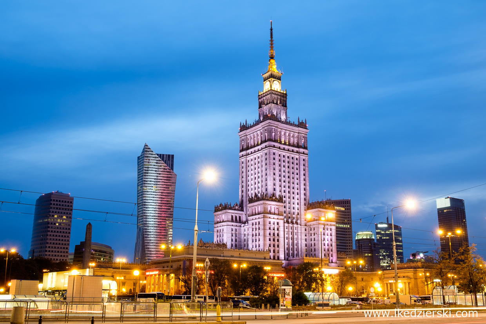

Zycie rozrywkowe Warszawy
Czy wiesz, że wiele warszawskich muzeów zwiedzisz bezpłatnie? Sprawdź, kiedy obowiązuje w nich darmowe wejście. Dodatkowo przez cały listopad bez biletu odwiedzisz Zamek Królewski, Pałac w Wilanowie i Łazienki Królewskie. Ponadto co roku w połowie maja w Warszawie organizowana jest Noc Muzeów. Tego dnia, nie wydając ani złotówki, odwiedzisz ponad 200 muzeów, galerii i innych, często na co dzień zamkniętych dla zwiedzających miejsc.
Muzea ktore warto odwiedzic w Warszawie
- Muzeum Wodki
- Muzeum Neonow
- Muzeum zycia w PRL
- Muzeum Powstania Warszawskiego
- Muzeum Historii Zydow Polskich
Warszawskie Restauracje
Najlepsze restauracje w Warszawie to eklektyczna mieszanka miejsc, na których sukces składają się spójny koncept, najwyższej jakości składniki, intrygujące menu, stylowy wystrój, kunszt szefów kuchni i doskonała obsługa. Oto lista TOP 5 adresów na gastronomicznej mapie stolicy, które warto znać. I tam wracać!
Top 5 restauracii w Warszawie
- Ale Wino!, Mokotowska 48
- Epoka, Ossolińskich 3
- Bez Tytułu, Poznańska 16
- Dyletanci, Rozbrat 44A
- Opasły Tom, Wierzbowa 9
Kluby nocne
Warszawa, podobnie jak inne stolice europejskie, tętni życiem nie tylko za dnia, ale również w nocy. Oczywiście najwięcej dzieje się w piątek i w sobotę, wtedy zazwyczaj ilość imprez, koncertów i innych atrakcji organizowana przez warszawskie kluby przyprawia o zawrót głowy. Często trudno jest się zdecydować na uczestnictwo tylko w jednym wydarzeniu, jednak zawsze można zaliczyć kilka przystanków jednego wieczoru, wystarczy zamówić przejazd z Uberem Mapa nocnego życia stolicy zmienia się bardzo dynamicznie. Nowe warszawskie puby otwierają się każdego dnia to samo dotyczy klubów nocnych i restauracji otwartych do późna. Na pewno ciekawie jest odwiedzać nowo otwarte miejsca, jednak o prawdziwym charakterze nocnej Warszawy stanowią lokale, które istnieją tu od lat i Przedstawiamy kilka klasycznych oraznowo otwartych miejsc, w których warto pojawić się po zmroku.
Top 5 klubow nocnych w Warszawie
- The View
- Level 27
- Platinium
- Enklawa
- Opera